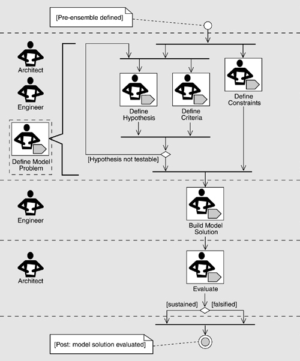

| [ Team LiB ] |
|
18.3 Component-Based Design as SearchSince component capabilities and liabilities are a principle source of architectural constraint in system development, and since systems use multiple components, component-based system design becomes a search for compatible ensembles of off-the-shelf components that come the closest to meeting system objectives. The architect must determine if it is feasible to integrate the components in each ensemble and, in particular, to evaluate whether an ensemble can live in the architecture and support system requirements. In effect, each possible ensemble amounts to a continued path of exploration. This exploration should initially focus on the feasibility of the path to make sure there are no significant architectural mismatches that cannot be reasonably adapted. It must also take into account the feasibility of the repair and the residual risk remaining once the repair is completed. Of course, the simultaneous exploration of multiple paths is expensive. As we show in our example, it is more likely that the focus will be on a primary path with additional paths treated as secondary. The important point is to view the selection of components in terms of ensembles rather than singly and to keep in mind that a particular path constitutes a hypothesis to be verified rather than a definitive design. "How is it possible for one to achieve system quality attributes when dealing with component-dominated architectures?" The first answer may be that one does not. In many cases, the ability to use an existing off-the-shelf package to deploy greater functionality in a short time may outweigh performance, security, or other system requirements. Using OTS components sometimes blurs the line between requirements and system design. Evaluating components often causes modification of system requirements, adding to expectations about capabilities that may be deployed while forcing other "requirements" to be reconsidered. Some flexibility in system requirements is beneficial in the integration of component-based systems, but it is also important to recognize when a requirement is essential to the success of the system and to not allow these requirements to be compromised. How, then, do we ensure that essential qualities are maintained in our component-dominated architecture? In the previous section, we mentioned that component integration was a principal risk area and that the system architect must determine the feasibility of integrating a component ensemble such that the system is functionally complete and meets its quality attribute requirements. Ensembles then, must be evaluated to ensure not only that the components can be successfully integrated but also that they can support quality attribute objectives. To evaluate the feasibility of a component ensemble, including its ability to support the system's desired quality attributes, we use model problems. Narrowly defined, a model problem is a description of the design context, which defines the constraints on the implementation. For example, if the software under development must provide a Web-based interface that is usable by both Netscape's Navigator and Microsoft's Internet Explorer, this part of the design context constrains the solution space. Any required quality attributes are also included in the design context. A prototype situated in a specific design context is called a model solution. A model problem may have any number of model solutions, depending on the severity of risk inherent in the design context and on the success of the model solutions in addressing it. Model problems are normally used by design teams. Optimally, the design team consists of an architect who is the technical lead on the project and makes the principal design decisions, as well as a number of designers/engineers who may implement a model solution for the model problem. An illustration of the model problem work flow is shown in Figure 18.1. The process consists of the following six steps that can be executed in sequence:
Figure 18.1. Model problem work flow In the remainder of this chapter we introduce an example and illustrate the application of these steps in the development of a Web-based application called ASEILM.
|
| [ Team LiB ] |
|